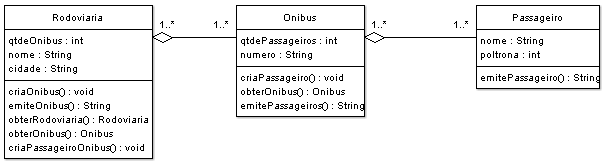

Lista de Exercícios 4¶
Lista de exercícios propostos pelo Prof. Daniel Facciolo Pires.
- Associação
Acesse os Códigos.
Exercício 1¶

De acordo com o Diagrama de Classes da UML acima:
- Crie as classes Passageiro, Reserva e Vôo, bem como suas variáveis. Todas as variáveis são encapsuladas.
- Crie os métodos construtores sem parâmetro e com parâmetros para todas as classes
- Crie os métodos:
a) set e get da classe Vôo
b) set e get da classe Reserva
c) set e get da classe Passageiro - Crie um método de instância na classe Voo que mostra as informações da classe Voo;
- Crie um método de instância na classe Reserva que mostra as informações da classe Reserva;
- Crie um método de instância na classe Passageiro que mostra as informações da classe Passageiro;
- Crie uma classe chamada TestaPassageiro que cria instâncias da classe Passageiro, e testa todos os métodos criados nos itens anteriores
Exercício 2¶

De acordo com o Diagrama de Classes da UML acima, implemente os métodos:
- Passageiro
- construtores
- getters e setters
- public String mostra()
- Onibus
- construtores
- getters e setters
- public String mostra()
- public void associaPassageiro(Passageiro passageiro){
- public boolean desvincularPassageiro(Passageiro passageiro){
- public boolean obterPassageiro(Passageiro passageiro)
- public boolean obterPassageiro(String cpf){
- private int obterPosicaoPassageiro(Passageiro passageiro){
- private int obterPosicaoPassageiro(String cpf){
- public boolean atualizaPassageiro(Passageiro passageiro){
- Rodoviaria
- construtores
- getters e setters
- public String mostra()
- public void associaOnibus(Onibus onibus){
- public boolean associaPassageiroOnibus(Onibus on, Passageiro pas){
- public boolean desvinculaOnibus(Onibus onibus){
- public boolean desvinculaPassageiroOnibus(Passageiro passageiro, Onibus onibus)
- public boolean obterOnibus(Onibus onibus)
- public boolean obterPassageiroOnibus(Onibus onibus, Passageiro passageiro)
- public boolean obterOnibus(int numero)
- private int obterPosicaoOnibus(Onibus onibus)
- private int obterPosicaoOnibus(int numero)
- public boolean atualizaOnibus(Onibus atual, Onibus novo)
- public boolean atualizaPassageiroOnibus(Onibus onibus, Passageiro passageiro)
- Faça o TestaRodoviaria para chamar os métodos criados na Rodoviária.
Exercício 3¶

De acordo com o Diagrama de Classes da UML acima, implemente os métodos:
- Topico
- construtores
- getters e setters
- public String mostra()
- Disciplina
- construtores
- getters e setters
- public String mostra()
- public void associaTopico(Topico topico){
- public boolean desvincularTopico(Topico topico){
- public boolean obterTopico(Topico topico)
- public boolean obterTopico(String cpf){
- private int obterPosicaoTopicoo(Topico topico){
- private int obterPosicaoTopico(String cpf){
- public boolean atualizaTopico(Topico topico){
- Curso
- construtores
- getters e setters
- public String mostra()
- public void associaDisciplina(Disciplina disciplina){
- public boolean associaTopicoDisciplina(Disciplina disciplina, Topico topico){
- public boolean desvinculaDisciplina(Disciplina disciplina){
- public boolean desvinculaTopicoDisciplina(Disciplina disciplina, Topico topico)
- public boolean obterDisciplina (Disciplina disciplina)
- public boolean obterTopicoDisciplina (Disciplina disciplina, Topico topico)
- public boolean obterDisciplina(int numero)
- private int obterPosicaoDisciplina(Disciplina disciplina)
- private int obterPosicaoDisciplina(int numero)
- public boolean atualizaDisciplina (Disciplina disciplina)
- public boolean atualizaPassageiroOnibus(Disciplina disciplina, Topico topico)
- Faça o TestaCurso para chamar os métodos criados no Curso.